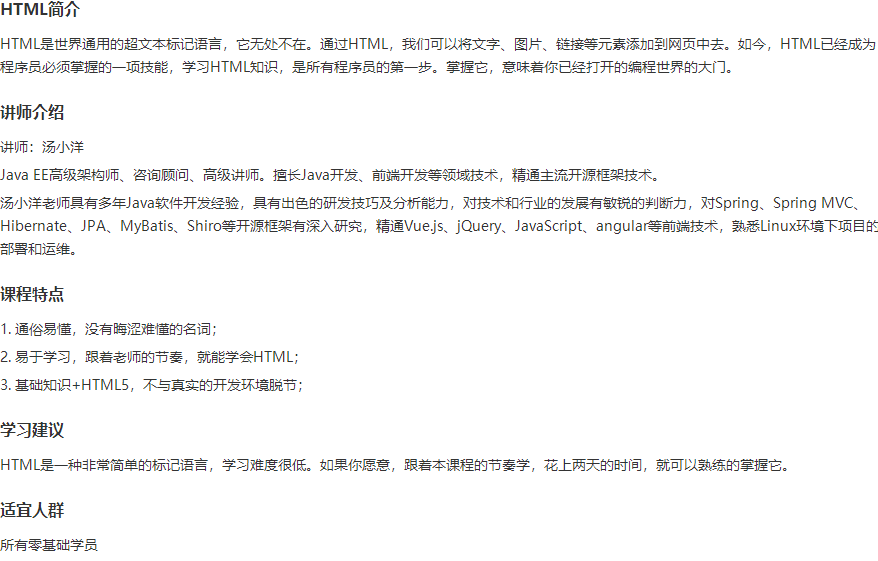

课程介绍
课程目录
试学
课程评价
第一章 Java Web 简介
1.1 什么是Web应用程序
试学
1.2 静态网页与动态网页
试学
1.3 搭建Java Web开发环境
试学
1.4 Tomcat目录结构
试学
1.5 手工编写第一个Java Web程序
1.6 WEB-INF目录详解
1.7 IntelliJ IDEA开发Java Web程序
04:29
1.8 修改Tomcat服务器默认端口号
第二章 JSP基础语法
2.1 JSP简介
2.2 常见动态网站开发技术对比
2.3 JSP页面元素简介及page指令
2.4 JSP注释
2.5 JSP语法
2.6 JSP页面生命周期
06:20
2.7 小节项目
05:02
第三章 JSP内置对象（上）
3.1 JSP内置对象简介
3.2 web程序的请求与响应模式
3.3 out对象
3.4 get与post提交方式的区别
3.5 request对象
3.6 response对象
3.7 请求重定向与请求转发的区别
第四章 JSP内置对象（下）
4.1 什么是session
4.2 session对象
4.3 session的生命周期
4.4 application对象
4.5 page对象
4.6 pageContext对象和config对象
4.7 exception对象
4.8 实操案例——实现用户登录（上）
06:16
第五章 JavaBeans
5.1 JavaBean简介及设计原则
5.2 什么是JSP动作元素
5.3 使用普通方式创建JavaBean
5.4 useBean动作元素
5.5 setProperty
5.6 getProperty
5.7 JavaBean四个作用域范围
5.8 Model简介
5.9 实操案例——实现用户登录（下）
04:01
第六章 JSP状态管理
6.1 http协议的无状态性
6.2 Cookie概述
6.3 JSP页面中创建与使用Cookie
6.4 案例：Cookie在登录中的应用
06:20
6.5 Session与Cookie的对比
第七章 JSP指令与动作元素
7.1 include指令
7.2 include动作
7.3 include指令与include动作的区别
7.4 forward动作与param动作
该课程暂无评价噢！
推荐课程
Java面试 基础题应知应会
2246人参与
JSP 微课
1058人参与
Java微课
45788人参与
Java8编程开发入门
3161人参与
深入解析Java面向对象
367人参与
浅谈Java反射技术
447人参与
